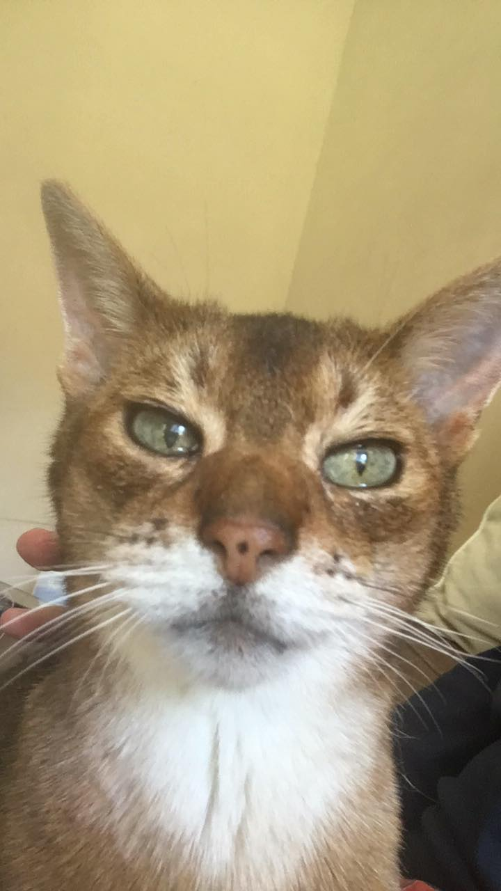

Abyssinian Information Science and German dual degree student seeking job in software development or database design.
INST327 Academic Peer Mentor (AMP)
Work with students inside and outside of class to help them understand database design and usage of Structured Query Language(SQL).
Responsibilites:
- Hold office hours
- Mentor students with their semester-long projects
Busboy
Busboy at Tersiguel's French Country Restaurant. Assisted waiters in serving meals and clearing tables.
- Managed supply of items and maintained serving area
- Worked with restaurant staff and guests to maintain positive dining experience
Boy Scout Patrol Leader
Lead a Boy Scouts of America patrol of 12 people in Philmont, New Mexico on a two week long backpacking trip.
- Planned weekend hiking excursions to prepare for longer trip in Philmont
- Delegated tasks to various scouts to ensure camp was prepared daily
- Understood the capabilities of each patrol member and maintained a positive enviornment for all